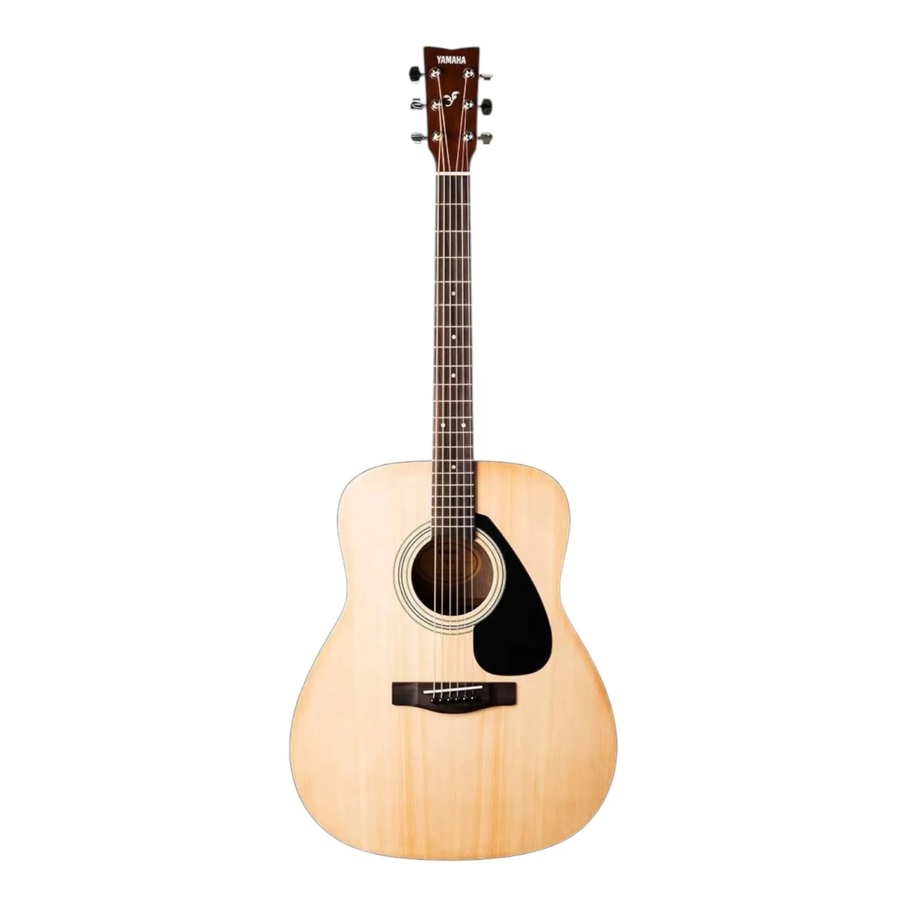
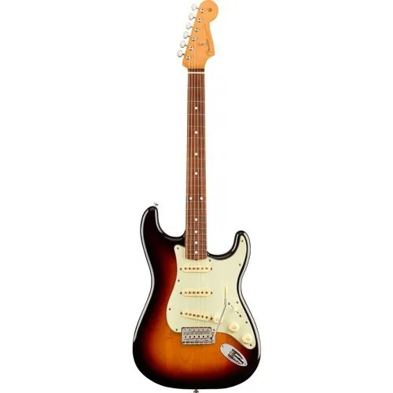
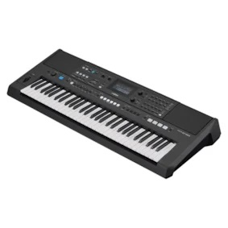
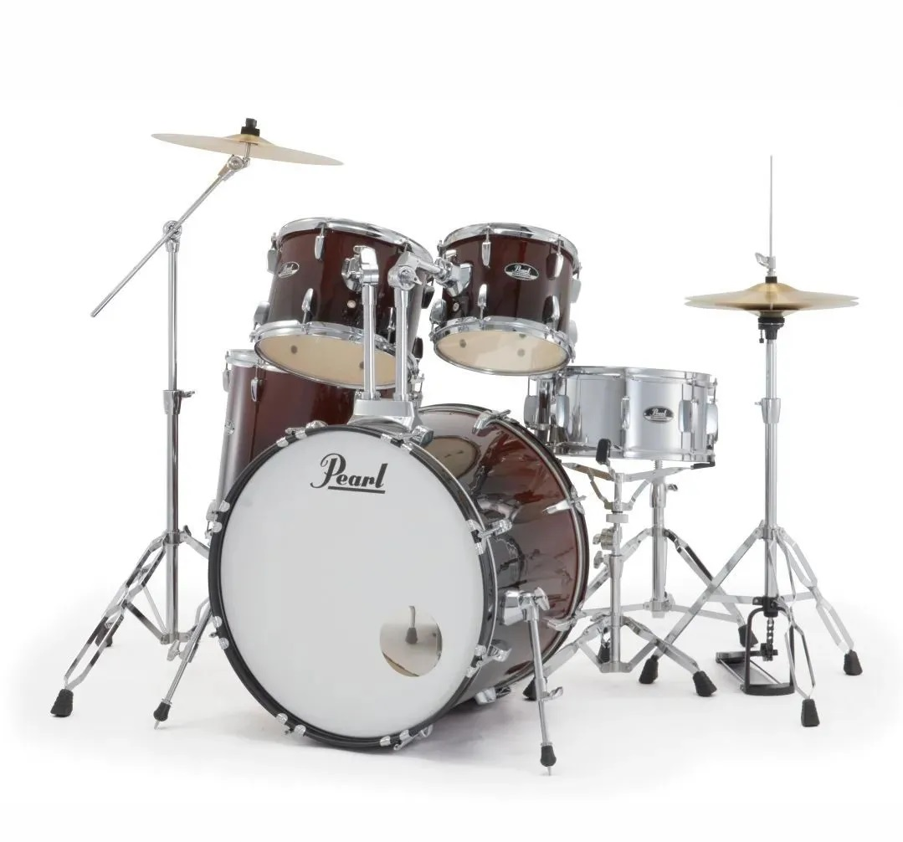
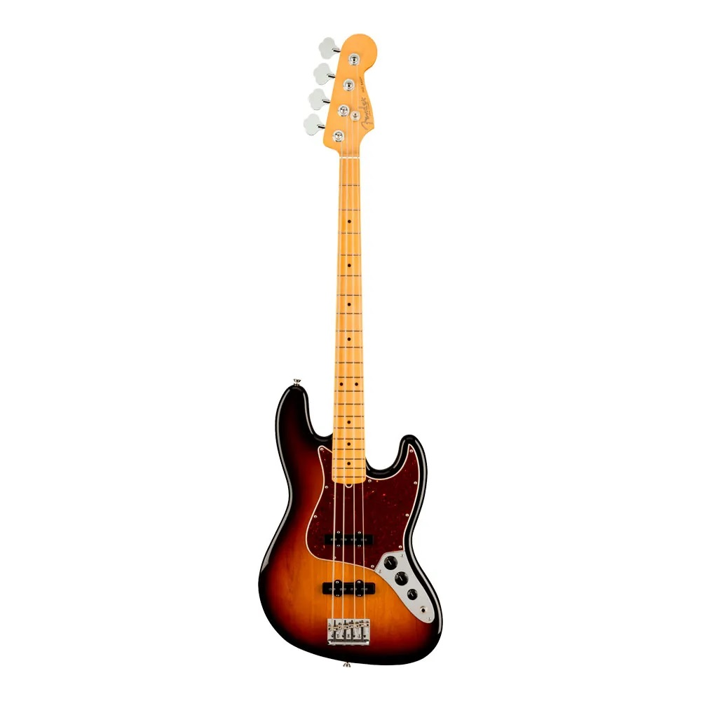
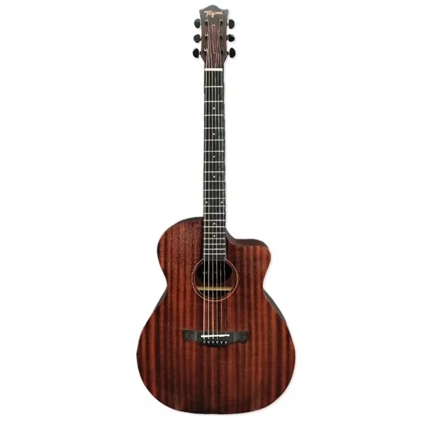
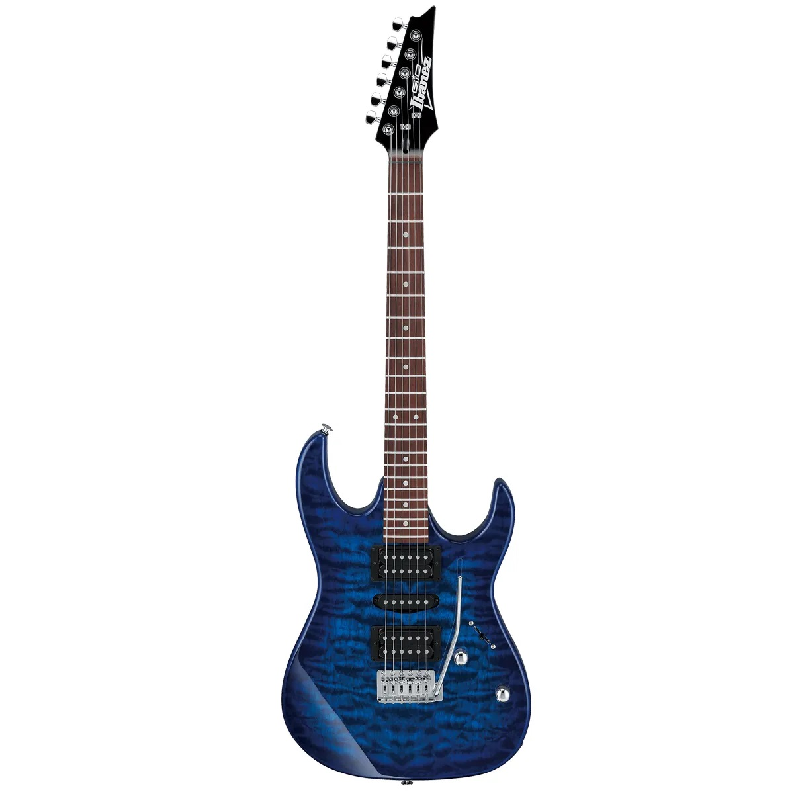
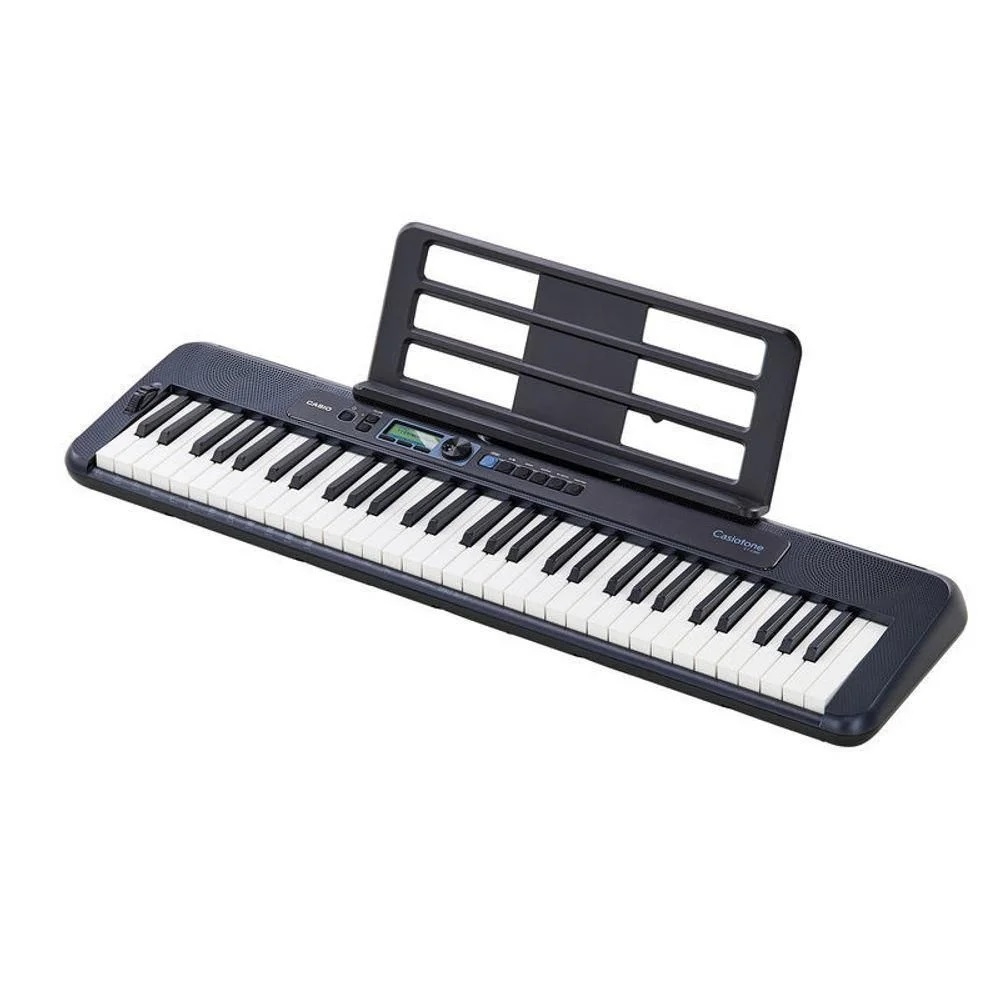
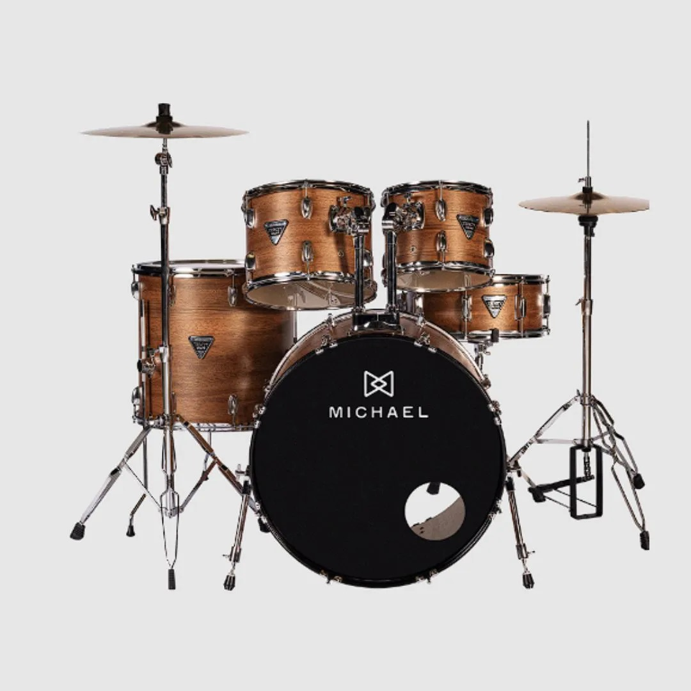
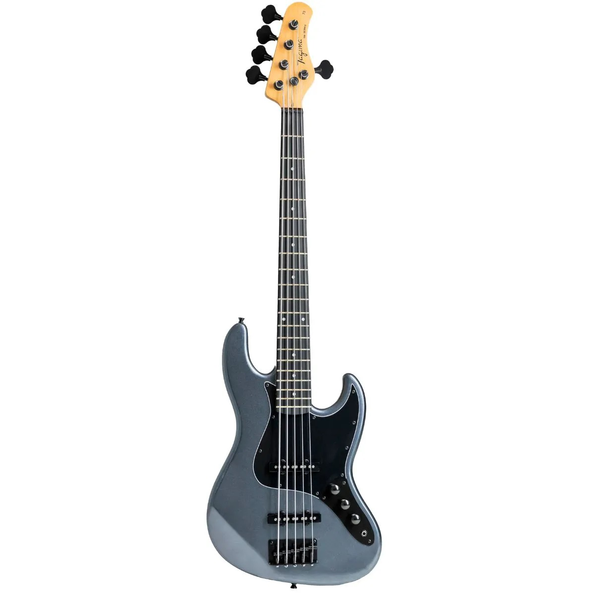

Violão Yamaha F310
Violão
Violão acústico versátil, ideal para estudos, prática e apresentações.
R$ 1.699,00
ComprarNa Central da Música você encontra instrumentos para estudo, ensaios, apresentações e para todos os estilos musicais.

Violão
Violão acústico versátil, ideal para estudos, prática e apresentações.
R$ 1.699,00
Comprar
Guitarra
Guitarra elétrica clássica, conhecida por sua versatilidade e timbre marcante.
R$ 5.999,00
Comprar
Teclado
Teclado versátil com diversos sons e recursos para estudo e apresentações.
R$ 2.099,00
Comprar
Bateria
Kit de bateria completo, indicado para iniciantes e músicos em desenvolvimento.
R$ 3.999,00
Comprar
Contrabaixo
Contrabaixo elétrico com timbre definido e grande versatilidade musical.
R$ 5.799,00
Comprar
Violão
Violão confortável e versátil, indicado para estudos e apresentações.
R$ 1.499,00
Comprar
Guitarra
Guitarra elétrica moderna, indicada para diferentes estilos musicais.
R$ 1650,00
Comprar
Teclado
Teclado compacto e versátil, ideal para quem está começando a estudar música.
R$ 1.399,00
Comprar
Bateria
Kit de bateria para estudos, ensaios e desenvolvimento musical.
R$ 2.499,00
Comprar
Contrabaixo
Contrabaixo de quatro cordas com timbre versátil para diferentes estilos.
R$ 1.699,00
Comprar